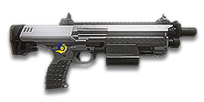

← Back to the NC08 Mag-Scatter comparison
Sage Guide · New Conglomerate · Every class, including Infiltrator
Every class, including Infiltrator — 1,000 certs / 699 DBC — New Conglomerate · Pistol (secondary slot)
A shotgun in your pistol slot: two pulls kill up close, it swaps in 250 ms, and it turns your primary's reload into someone else's problem. It is a finisher, not a main weapon — five shells is not a plan.
Pistol — it lives in your SECONDARY slot. This is a shotgun sidearm, not a primary. You draw it to finish a fight your primary started.

Your primary runs dry mid-fight. You swap to your sidearm, aim down sights while still moving, and fire — and your pellets go everywhere except into him. The kill feed says he killed you. This section is why.
When you sprint, your aim cone is at its widest — and it stays wide until you stop moving and wait. Firing from a sprint doesn't just make your shots inaccurate: your whole pellet pattern is centred on a point that can be anywhere inside that wide cone. Six pellets, 3° of spread, all of them faithfully centred on the wrong place.
Aiming down sights while still moving doesn't fix it. The sight doesn't shrink the pellet spread — it is 3° hip or ADS — and it doesn't shrink the cone you fired from, either. All it does is steady the pattern's centre, and the centre was never the problem: where it was pointing was.
Stop. Aim. Then shoot. Release the sprint key, let your feet stop, give the cone a beat to close, then pull the trigger. On this gun that beat is short — but it is not optional, and it is not zero. The swap is 250 ms; the beat after it is what the kill costs.
One difference from a rifle: there is no bloom on a shotgun. The cone never grows as you fire, because the cone is the pellet spread — constant on every pull, the same hip and ADS. Each pull is deliberate on a semi-auto gun, so use that: one pull, re-aim, one pull. Two paced pulls kill up close.
The exception: inside 5 metres, don't aim down sights at all — hipfire and keep moving. The pattern is 0.26 m wide at 5 m; it fits a torso without a sight. ADS only slows you down at that range.
Four beats, left to right — the same mistake the cards above describe, drawn out.
1 · SprintingYour cone starts maxed at 7.0° — the widest it can ever be.
2 · Trigger heldFiring from the hip while running — every shot adds bloom.
3 · ADS, mid-holdThe sight looks precise — but aiming down sights does not reset bloom.
4 · The sprayBullets fly out of the wide cone you built. The enemy walks away.
Same fight, done right. Each beat has a job, and the order is the whole lesson.
1 · StopLet go of sprint (and the trigger). About 0.3 s for the gun to settle.
2 · AimPress ADS and let the sight come up (~0.15 s).
3 · FireNow fire — from the aimed cone. First shots land where the dot points.
The exception — under ~8 m, skip the whole danceHipfire works, no ADS needed, and stopping is optional. Keep moving, strafe, and let the hipfire ring do the work.
Every pull throws 6 pellets, each worth 100 damage up close and 60 at 24 m. That is 600 damage a pull at point blank and 360 at range — so the kill is 2 pulls up close and 3 past ~17 m, and the whole game is knowing which side of that line you are standing on.
Damage is per pellet. A "pull" is one trigger pull — the whole pattern. Shots to kill counts pulls, never single pellets. Headshots multiply each pellet by 1.5×, but on a shotgun that rarely changes the count: aim centre of mass and let the pattern do the work. The table assumes every pellet lands; section 03 is about how many actually do.
| Range | Damage per pellet | Damage per pull | Pulls to kill (chest) | Pulls (head) | Pulls (shielded Heavy) | Best-case TTK |
|---|---|---|---|---|---|---|
| 0–5 m | 100 | 600 | 2 | 2 | 3 | 0.45 s |
| 5–20 m | 100 → 73 | 600 → 440 | 2–3 | 2 | 3–4 | 0.45–0.90 s |
| 20 m and beyond | 60 | 360 | 3 | 2 | 4–5 | 0.90 s |
Crossovers: chest kills take 2 pulls to ~17 m, 3 pulls past that. Headshots keep the 2-pull kill at every range — past 17 m, aim for the head and you still kill in two. A shielded Heavy (1,450 HP): 3 pulls to ~18 m, 4 to ~24 m, 5 at 24 m. Best-case TTK is (pulls − 1) × 450 ms.
Full power to 12 m, then a steady slide to minimum at 24 m. The gold line shows Flechette Ammunition, which triples both ranges.
Full power to 12 m, then a steady slide to minimum at 24 m. The gold line shows Flechette Ammunition, which triples both ranges — but drops you to 5 pellets a pull.
Flechette Ammunition (100 certs) triples the damage ranges — 12–24 m becomes 36–72 m — and drops you to 5 pellets a pull. The chest kill stays 2 pulls to 36 m, 3 pulls to ~62 m. On a sidearm that is the difference between a finisher and a joke: with flechette, the Mag-Scatter is still a two-pull kill at the ranges where your primary's reload got you killed.
First-shot kick: Census and the wiki agree on a 1× first-shot multiplier. The workbook says 2 — the Census figure is used here.
Per-pellet damage at any range, with the pulls to kill and the best-case TTK that follow from it. Same model as the table above — move the slider and watch the kill go from two pulls to three.
Short reload 1.8 s, on empty 2.6 s — the difference is the chamber time after the last shell. Shells load one at a time, and you can interrupt the reload and fire with whatever is already loaded. So reload in short bursts between fights, and never let it run dry: the empty reload is the one that gets you killed.
A shotgun's range is not set by its damage. It is set by the size of the pattern against the size of a torso.
2 pulls to kill. The pattern is 0.26 m wide at 5 m — inside a torso. This is the range you drew it for: primary dry, swap in 250 ms, two pulls, fight over. Hipfire and keep moving.
2 pulls to ~17 m, 3 past that — unless you hit the head, which keeps the 2-pull kill at every range. ADS to steady the pattern's centre, one pull, re-aim, one pull. With a Smart-Choke the pattern is 0.25 m wide at 8 m — tight enough to pick a head at 15 m.
3 pulls on the chest, 2 on the head — and the pattern is 1.05 m wide at 20 m. Flechette stretches the 2-pull kill to 36 m; without it, swap back to your primary. A five-shell pistol is not a mid-range weapon.
That is the whole range game, and it is why the damage chart in section 02 is only half the story: the chart assumes every pellet lands. The pattern decides how many do, and the pattern grows with distance — 4° of spread is 0.35 m wide at 5 m and 1.40 m at 20 m. Section 05 draws it to scale so you can see it.
Click once per pull — no holding: this gun fires one pull per trigger press. The bar empties as the gun settles; wait for it before the next pull. That pause is the re-aim beat.
There is no bloom on this gun — no ADAD rhythm to manage, no cone that grows as you fire. The cone is the pellet spread: constant on every pull, the same hip and ADS. What changes with stance is where the pattern is centred, and what changes as you fire is where the next pull's centre lands. The table is the whole stance story:
| Stance | Pellet spread | What changes |
|---|---|---|
| Standing still, hipfire | 3.0° | Pattern centre: 0.5° CoF — the pattern is the cone; your aim point sits in the middle of it. |
| Standing still, ADS | 3.0° | Same spread — the sight steadies the pattern's centre, it doesn't shrink it. Smart-Choke cuts it to 1.8°. |
| Moving / strafing, hipfire | 3.0° | Same spread; the pattern centre widens to 1.0° CoF while moving — still small against a 3° pattern. |
| Moving, ADS | 3.0° | Same spread; ADS move speed 0.75× — you strafe slower for a steadier centre. |
| Sprinting | maxed | Never start firing from a sprint — the pattern centre can be anywhere inside the sprint cone. Stop first. |
The spread never changes. ADS doesn't shrink it, moving doesn't grow it, crouching doesn't touch it. Only the Smart-Choke changes it (section 06) — and only by trading hipfire width for ADS tightness.
One pull per trigger press, 450 ms apart at most. Two paced pulls kill up close, and the pause between them is where you re-aim. The 450 ms refire is the slowest in this set — which is why the re-aim beat is not optional on this gun.
Clicking as fast as the gun allows fires the next pull before the last one's recoil has settled. The pellets land where the muzzle was, not where the dot is. At 450 ms a pull, a mashed second pull is a wasted shell — and you only have five.
This gun's fire mode is the 250 ms equip time. Primary to soft, swap, two pulls, swap back. The Mag-Scatter is a finisher: its job is the last 600 damage of a fight your primary started.
A target 8 m away, firing from the hip. Click FIRE once per pull. Each pull throws 6 pellets; the bar empties as the gun settles. Wait for it to empty before the next pull — that is the re-aim beat. Mash the trigger and the pellets land where the last pull's recoil left the muzzle.
Your pulls will be graded here — green when you wait out the re-aim beat.
A full-size target 8 m away — an arm's-length room fight. The rings show where your pellets can land around your aim point (the chest). Sizes are drawn to scale from the gun's real pellet spread: spread diameter = 2 × distance × tan(spread ÷ 2).
Read it this way: the ring is the whole pattern, not a miss radius — pellets land anywhere inside it, scattered at random. Keep the ring on the torso and most of the pellets hit; let the ring grow wider than the torso and the edge pellets start missing entirely. That is the whole range game on this gun: at 8 m the ring fits a chest, at 20 m it doesn't. (Ring sizes use the real geometry: spread diameter = 2 × distance × tan(spread ÷ 2).)
The ring that matters is the blue one: 0.42 m at 8 m, hipfire, no attachments. The Smart-Choke's green ring is the payoff — 0.25 m ADS, the tightest pattern of any pistol in the game, tight enough to pick a head at 15 m. Its red ring is the price: 0.50 m hipfire. On a gun you draw and fire in half a second, that trade is only worth it if you ADS past 5 m — which, past 17 m, you should.
Every pull kicks the muzzle sideways. Re-aiming between pulls puts the pattern back on the chest. Same 6 pulls, two very different outcomes:
One pull, re-aim, one pull — that is the whole firing discipline on this gun. The refire time is the floor, not the target: the beat that matters is the one you take to put the dot back on the chest. Mash the trigger and you are firing at where the last pull's recoil left the muzzle, not where the enemy is.
No zoom. The target at 35 m is small but the view is wide open — you see the crate, the tower, and the next enemy coming. Fast to aim, nothing blocks your edges. Best inside ~40 m.
Same target, same 35 m — but he looks twice as tall, so placing shots on his chest and head gets much easier. The price: your view narrows to the round window, the crate and tower are gone, and close targets feel fast and huge. Best at 25–50 m.
A 1x sight on the left, a 2x on the right — the same target, the same distance. The 1x is the default: this is a sidearm for arm's-length finishes. The 2x costs 100 certs and buys almost nothing on a gun with five shells — unless you run the flechette long-pocket build in section 07, which is the one place it earns its keep.
Nothing is pre-equipped on this gun: every attachment costs certs, on top of the 1,000-cert gun. Buy in the order below and the gun gets better with every purchase.
| Attachment | Cost | Verdict | What it does |
|---|---|---|---|
| TekLyte Reflex (1x) | 30 | First buy | The default sight. Clear, fast, and all you need at this gun's range. |
| GD RefleXR (2x) | 30 | Good | Worth it only with Slug or Flechette, where you are genuinely aiming at range. |
| Attachment | Cost | Verdict | What it does |
|---|---|---|---|
| Smart-Choke | 100 | First buy | ADS spread −40% (3° → 1.8°), hipfire spread +20% (3° → 3.6°). The ADS half is why you buy it; the hipfire half is why you ADS past 5 m. |
There is no compensator, suppressor, heavy barrel or short barrel for shotguns. The wiki's attachment tables list only the Smart-Choke in this slot, and the Compensator's own availability page lists no shotguns in any faction.
| Attachment | Cost | Verdict | What it does |
|---|---|---|---|
| Darklight Flashlight | 100 | Situational | Shows cloaked Infiltrators. No recoil benefit. |
| Extended Magazine (+2 shells) | 100 | Good | +2 shells (5 → 7). Two more pulls in a gun that lives or dies on its second pull. |
| Laser Sight (MPL) | 100 | Good | Hip vertical and horizontal recoil −60%. On a pistol you draw and hipfire, this is the best rail choice. |
| Attachment | Cost | Verdict | What it does |
|---|---|---|---|
| Flechette Ammunition | 100 | Good | Triples the damage ranges (12–24 m → 36–72 m) for −1 pellet. Two pulls to 36 m, three to ~62 m. |
Buy in this order: 1x sight (30) → Smart-Choke (100) → Extended Magazine (100) → Flechette (100). The full pocket build at 330 certs. MPL instead of the choke if you never ADS.
Attachment mountability comes from the Census attachment list for this weapon; costs and the long/short reload from the wiki.
Four builds. The recommended one is the one with the testing behind it; the others are honest alternatives for different fights.
0 certs
What the gun is out of the box. Two pulls up close, five shells — the attachments below stretch it, not fix it.
330 certs
The full pocket build: 7 shells, flechette to 36 m, choke-tight ADS pattern. The sidearm that finishes fights instead of starting them.
130 certs
Pair with any primary: primary to soft, swap in 250 ms, two pulls, swap back. The choke and flechette stay home — this build is for arm's length.
400 certs
Flechette + choke for finishes past 30 m; the laser covers the hipfire panic shot. The 2x costs 100 certs and only earns it here.
Know the losing matchups before you walk into them. A shotgun's weaknesses are all range and reload — which means they are all decisions, not stats.
Ten minutes in the VR training room, before you take this gun into a real fight. Do them in order — each one builds on the last.
Pocket summary: Draw to finish, two pulls, swap back. Reload it when you holster it. Headshots past 17 m.